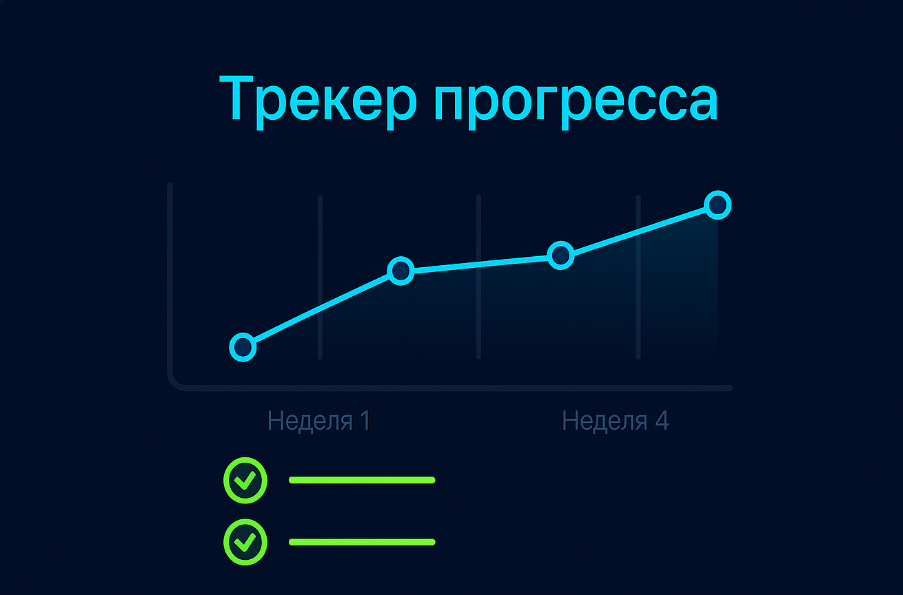
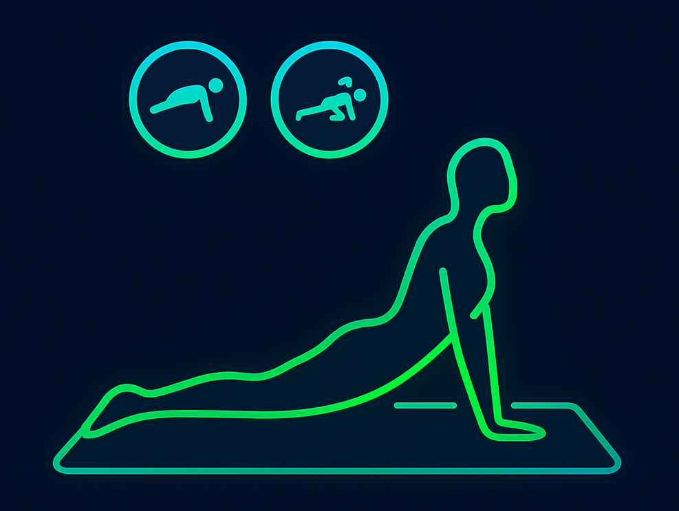
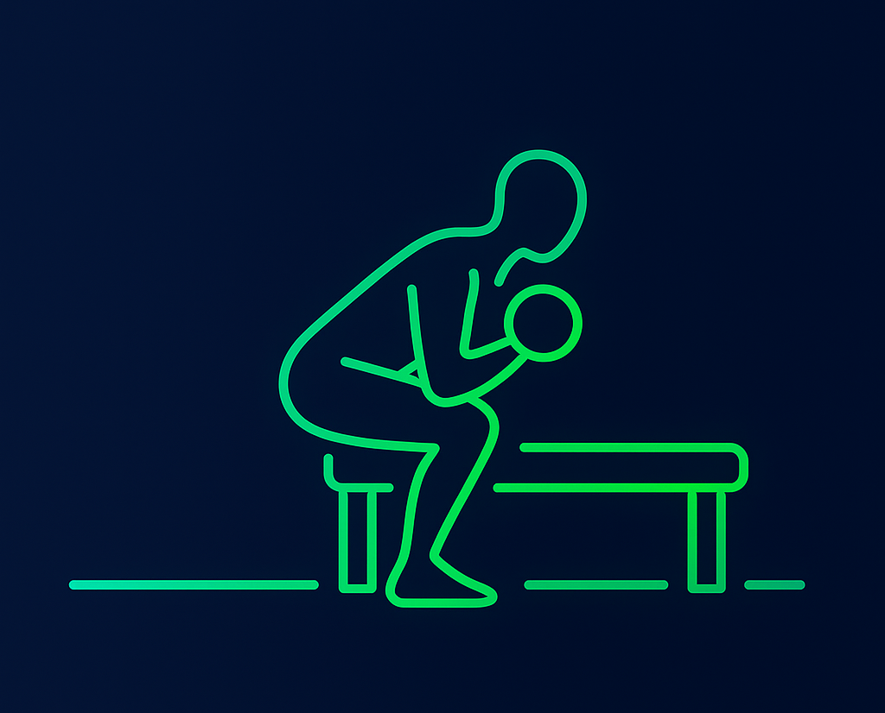
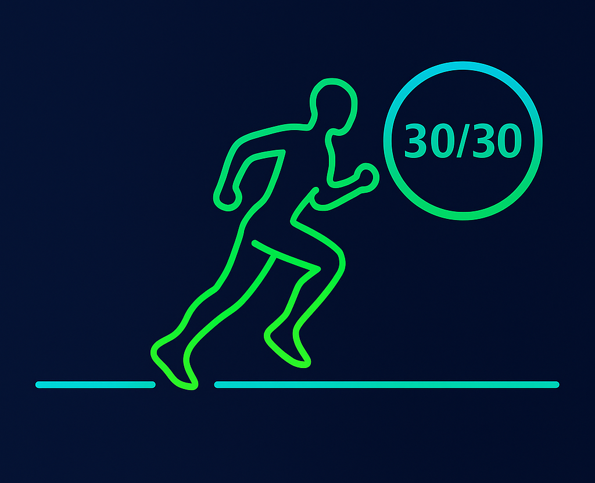

Тренировки без оборудования
Комплексы на всё тело, фокус на осанке, дыхании и устойчивости корпуса. Короткие сеты легко встраиваются в ваш день.
СмотретьHomeFit — это простой способ тренироваться дома и видеть реальный прогресс. Мы объединяем короткие и понятные видеотренировки, наглядные планы питания и удобный трекер результатов. Сайт нацелен на практику: меньше пустых обещаний, больше понятных шагов. Начните с 10 минут в день — и уже через пару недель почувствуете разницу в осанке, самочувствии и энергии.
Почему формат «дома» работает? Во‑первых, экономит время и убирает психологический барьер. Во‑вторых, упражнения можно подстроить под уровень подготовки: от базовой активности до интервальных комплексов. И наконец, HomeFit предлагает понятный способ отслеживать прогресс: не только вес, но и повторения, качество сна и самочувствие. Мы верим в мягкую дисциплину: маленькие, но регулярные действия, которые складываются в устойчивую привычку. На сайте вы найдёте подробные пояснения к технике, безопасные регрессии и варианты усложнения — так, чтобы каждая тренировка была посильной и приносила удовольствие.
Подобрать программу
Комплексы на всё тело, фокус на осанке, дыхании и устойчивости корпуса. Короткие сеты легко встраиваются в ваш день.
СмотретьПлан на неделю, простые рецепты и гибкий подход: без запретов, с упором на белок, клетчатку и плавный дефицит.
МатериалыФиксируйте повторения, время, самочувствие. Смотрите тенденции и корректируйте нагрузку без перегруза.
ПодробнееНачните с базовой стабилизации и лёгкой аэробной нагрузки. Если в конце недели чувствуете ресурс — добавьте по одному кругу. Важно: следите за техникой и дыханием, не гонитесь за количеством. Мы предлагаем три стартовых ветки: «Мобилизация и Кор», «Силовая база» и «HIIT‑микро».

10–20 минут: дыхание, суставная разминка, планка, «птица‑собака», мост, лёгкие вариации приседаний у стены.

15–30 минут: приседания, наклоны, отжимания от опоры, тяга резинкой, статические удержания — безопасная прогрессия.

12–18 минут: интервальные раунды 30/30 с базовыми движениями. Легко масштабировать по самочувствию.